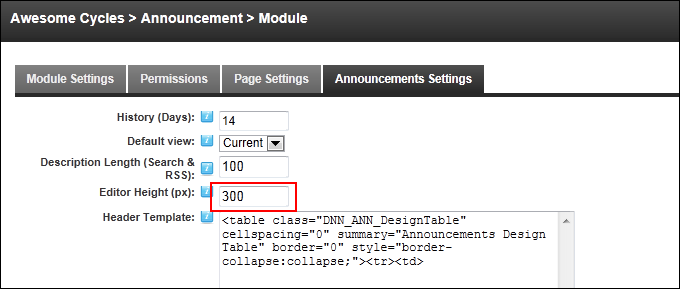

Setting the Editor Height
How to set the height of the Description Editor that is displayed on the Edit Announcements page of the Announcements module.
-
- Select the Announcements Settings tab.
- In the Editor Height (px) text box, enter the height in pixels for the Editor. The default setting is 300.

-
Click the OK button to confirm.